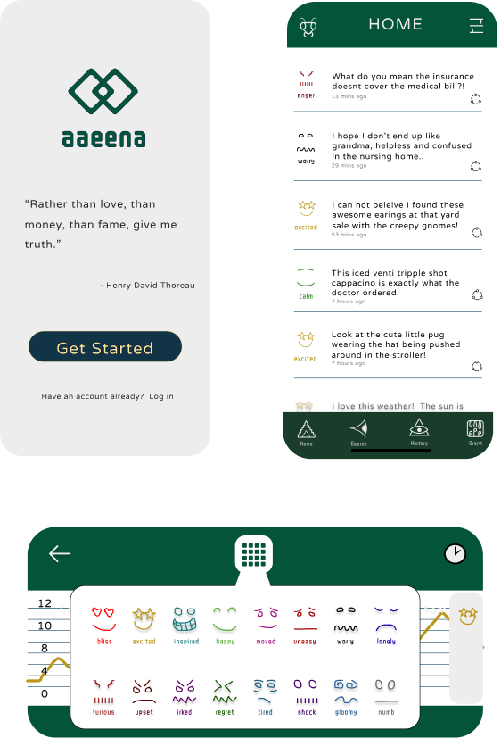
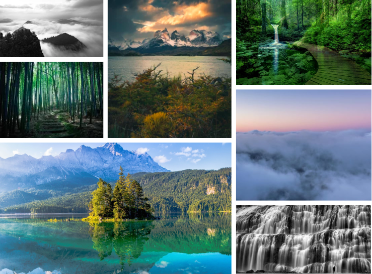

Emotions made easy
Aaeena
Aaeena is the student, teacher, and observer all rolled into one easy to use app. Aaeena tracks your voice and by understanding minute tonal inflections, assigns an emotion to the sound bite. These soundbites can later be reviewed like
an
electronic journal entry so you can better gauge where your mind is at and later reflect on how your emotions enter your daily conversations.
The goal of Aaeena is to provide its users with greater insight in how the user interacts with their surroundings and bring deeper understanding to emotional awarness.
With the progress of voice recognition technologies, Aaeena takes things
one step further. With advanced algorythms, Aaeena is able to understand tonal inflections in your language to determin a baseline mood. These mood entries are coorolated to trigger words so you can understand how specific instances shape
your emotional response. Aaeena is an automatic emotional cloud-based chronicaler that can be called upon in real time to give its users deeper insightins into their own realities.
Roles
- ‣ UX Design
- ‣ Visual Design
- ‣ Brand and Identity
Duration
- ‣ 3 months
Tools
- ‣ Figma
- ‣ Google Survey
- ‣ Pen and paper
Deliverables
- ‣ Competitive Analysis
- ‣ User Surveys
- ‣ Personas
- ‣ User Stories
- ‣ User Flows
- ‣ Sketches
- ‣ Wireframes
- ‣ Prototype
- ‣ Usabiity Testing
- ‣ Branding
- ‣ Sketching
- ‣ Moodboard
- ‣ Refinement
- ‣ Color Palettes
- ‣ Style Guidlines
- ‣ Hi-Fi Mockups
- ‣ Preference Testing
- ‣ Clickable Prototype
- ‣ Final Design
Competitive Analysis
I compared two large based cloud storage companies that have a large market share (Dropbox and Googledrive) and one a small slice of the market (Box). I found that all functioned similary and offered the upload and downloading of any type of file whether it be texts, photos, or video files. Each had a free version open to all users with between 5-10gb of memory and each had a paid subscription to increase total available gigabites to its users. With so many options in uploading files, I did not find cloud-based specilization. I wanted to investigate this further and look at if people uploaded soundfiles regularly to their cloud-based drives.
User Surveys
A survey was put together and what I found was that the vast majoritiy of people used cloud storage but no one consistantly saved voice data to their cloud drives. Many participants felt frustratation and regret over not remembering what they had talked about earlier in the day or week and were excitiedto utalize a tool that would aid with this problem. Below are some quick statistics:
100% Use cloud storage weekly
95% Never uploaded a voice recording to the cloud.
86% Would journal daily if time were not an issue
66% Would be open to seeking emotional guidance.
Personas
Three users with distinct roles were interviewed to gather what their wants, needs, goals, motivations, and frustrations regarding emotions and cloud storage.
User Stories
Automatically record and upload conversations.
Assign emotions to phrases based on tonal inflections.
Anonymous content sharing with other users.
View unbroken complete spoken history.
User Flows
Simplicity is what the user demands. An intuitive Dashboard where the most pertinent user information would be found. History where the user to view all the content. Search and Related content so the user sees they are not alone. And most importantly a mood graph for easy self realization in emotional habit forming.
The main goal is accessability for all, thus the user flows are simple and intuitive. The app is designed to do one thing really well. I want this software to transcende age, culture, and socio-economic status. The simpler, the better.
Sketches
Wireframes
Moodboard
Dealing with emotion can be extremely stressful. I wanted to find something that grounded people across different socities, cultures, and generations. Nature fit the bill nicely and that is what I wanted my moodboard to reflect.
Branding
Aaeena is unbiased like a mirror, what you see is what you get. What you said is what you will hear. I want the product to be low stress and calming to use. Everyone has their own unique way to find inner peace, however I feel nature is the single item everyone can relate to. I want this app to be accessable to all, therefore I strived to create an environment tied to the Earths natural beauty.
Colors
Logo Design

The logo is representative of a mirror. Two perfect reflections of each other. I wanted something that really drove home the idea of perfect reflection. What you give aaeena will be perfectly reflected back at you. Green was the appropriate color choice as it is the ultimate symbolic color for nature and life.
Logo Evolution
Usability Testing
- Prefered by 88% of Participants.
- Liked
- ”Tan reminds me of beach sand.”
- ”More comforting feel.”
- ”Nature orientated.""
- Disliked
- ”Colors look sleepy and dull.”
- “Not eye catching enough.”
- “Too dark.”
- Prefered by 12% of Participants.
- Liked
- "Colors are warm and tropical."
- ”Blue reminds me of the ocean.”
- ”Yellow and black is bee-like."
- Disliked
- "Blue feels too techy.”
- “Yellow is jarring.”
- “Brighter colors give exciting edge.”
- Preferred by 44% of participants.
- ”Looks Less Coperate.”
- ”Looks techy.”
- ”Looks Ancient.”
- Preferred by 56% of participants
- ”Less eyestrain.”
- ”Feel more linked to nature.”
- ”I like the more simplistic design.”
Prototype
Hi-Fi Mockups
Final Design
What I learned
Simplicity Works! It is easy to stary from the origional proposed groundwork, but pays off to be methodical and not stray too far. It was super interesting getting other peoples feedback and understanding how different perspectives come into play. People, other than me, seem to prefer less contrast and brighter colors. I always wondered why webpages used white backgrounds and dark text. I assumed it was a carry over from books, but aparently it is peoples true preference.